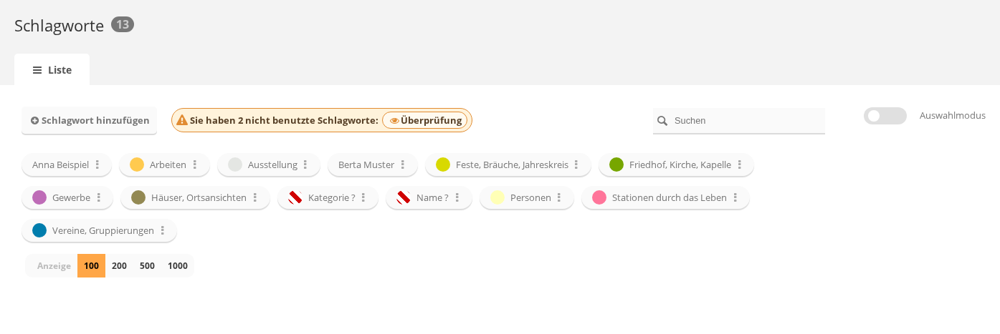
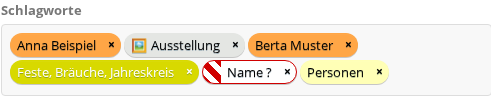
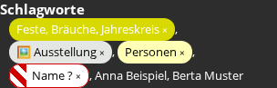
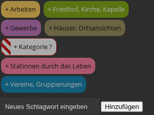

Schlagworte beschreiben, was auf einem Foto zu sehen ist, unabhängig davon, in welchem
Album es liegt. Sie werden unter
Verwaltung » Fotos » Schlagworte
(admin.php?page=tags) angelegt und in den Eigenschaften eines Fotos oder in der
Stapelverarbeitung zugeordnet.
Das ist Administratoren vorbehalten; farbige Schlagworte kann jeder angemeldete Benutzer auch
auf der Fotoseite setzen. Die Schlagworte eines Fotos werden außerdem in seine Bilddatei
geschrieben, siehe Schlagworte in der Bilddatei.
Schlagworte anlegen, umbenennen und löschen

Die Schlagwortverwaltung. Der farbige Punkt vor einem Namen zeigt die Farbe des Schlagworts.
Anlegen: auf Schlagwort hinzufügen klicken, den Namen eingeben und
bestätigen.
Suchen: das Feld Suchen rechts filtert die Liste.
Die drei Punkte hinter einem Schlagwort öffnen sein Menü mit fünf Einträgen:
Galerie-Ansicht: zeigt alle Fotos mit diesem Schlagwort so, wie Besucher
sie sehen. Fehlt, wenn kein Foto das Schlagwort trägt.
Fotos verwalten: öffnet die Stapelverarbeitung, gefiltert auf dieses
Schlagwort. Fehlt ebenfalls, solange kein Foto es trägt.
bearbeiten: benennt das Schlagwort um. Der neue Name kommt in das Feld
Name des Schlagworts, bestätigt wird mit Ja, umbenennen. Der Name
ändert sich überall, an jedem Foto.
Duplikat: legt eine Kopie des Schlagworts an, deren Name die Ergänzung
(Kopie) trägt. Die Kopie entsteht sofort und ohne Rückfrage.
Löschen: entfernt das Schlagwort. Die Rückfrage
Schlagwort "..." löschen? wird mit Ja, löschen
bestätigt oder mit Nein, ich habe meine Meinung geändert abgebrochen. Die
Fotos bleiben erhalten, sie verlieren nur dieses Schlagwort.
Schlagworte zusammenführen
Zwei Namen für dieselbe Sache lassen sich zu einem zusammenführen. Das geht nur im
Auswahlmodus.
Oben rechts Auswahlmodus einschalten.
Mindestens zwei Schlagworte anklicken. Unter Ihre Auswahl erscheinen die
gewählten Namen. Solange weniger als zwei ausgewählt sind, bleibt
Zusammenführen ausgegraut.
Auf Zusammenführen klicken und im Feld darunter das Schlagwort wählen, das
übrig bleiben soll. Darüber steht Die anderen Schlagworte werden entfernt.
Auf Zusammenführen bestätigen klicken. Alle Fotos der anderen Schlagworte
tragen danach das gewählte, die anderen Schlagworte sind gelöscht.
Abbrechen blendet das Feld wieder aus, ohne etwas zu ändern.
Nicht benutzte Schlagworte
Trägt kein Foto ein Schlagwort mehr, meldet die Seite oben
Sie haben ... nicht benutzte Schlagworte mit dem Link
Überprüfung. Die Meldung erscheint erst, wenn das Schlagwort seit mehr als
einem Tag unbenutzt und unverändert ist. Der Link löscht nichts, sondern zeigt zuerst die Namen. Erst
Löschen entfernt sie; Behalten blendet die
Meldung nur aus.
Schlagworte einem Foto zuordnen
In den Eigenschaften eines Fotos (admin.php?page=photo-<nummer>-properties)
steht das Feld Schlagworte. Beim Eintippen werden vorhandene Schlagworte vorgeschlagen,
das x an einem Eintrag entfernt ihn. Gesichert wird mit
Einstellungen sichern.

Die Schlagworte eines Fotos. Farbige Schlagworte tragen ihre Farbe, die übrigen die Standardfarbe des Feldes.
Ein Name, den es noch nicht gibt, wird beim Sichern als neues Schlagwort angelegt und kommt
in die Gruppe Freitext, siehe
Die vier besonderen Gruppen.
Beim Sichern ersetzt die Liste im Feld die bisherigen Schlagworte des Fotos vollständig.
Was hier fehlt, ist danach nicht mehr zugeordnet. Wer nur eines ergänzen will, lässt die
übrigen stehen.
Farbige Schlagworte
Ein Schlagwort kann einer Gruppe angehören und trägt dann deren Farbe. Farbige Schlagworte erscheinen auf der Fotoseite und
in den Eigenschaften eines Fotos als farbige Plakette, in der Schlagwortverwaltung mit einem
farbigen Punkt. Es gibt zwölf Gruppen, jede mit
eigener Farbe. Acht davon sind Themen:
Arbeiten
Feste, Bräuche, Jahreskreis
Friedhof, Kirche, Kapelle
Gewerbe
Häuser, Ortsansichten
Personen
Stationen durch das Leben
Vereine, Gruppierungen
Dazu kommen vier besondere Gruppen, siehe den nächsten Abschnitt.
Einer Gruppe zugeordnet wird ein Schlagwort in der Schlagwortverwaltung:
Auswahlmodus einschalten und mindestens ein Schlagwort anklicken. Erst
dann erscheint die Schaltfläche Farbe.
Auf Farbe klicken und unter Schlagwort-Farben festlegen
eine der vorhandenen Gruppen anklicken. Die erste, schwarze Fläche heißt
Farbe entfernen und nimmt das Schlagwort wieder aus seiner Gruppe.
Fehlt die passende Gruppe, unter Eine neue Farbe hinzufügen Name und Farbe
eingeben und auf Erstellen klicken.
Auf Schlagwort-Farben festlegen klicken, damit die Gruppe zugewiesen wird,
danach auf Schließen klicken.
Die vier besonderen Gruppen
Vier Gruppen sehen anders aus als die übrigen: zwei sind am linken Rand rot-weiß gestreift,
zwei tragen ein kleines Bild vor dem Namen.
Kategorie ? (rot-weiß gestreift): ein Merkzeichen für ein Foto, bei dem
noch offen ist, zu welchem der farbigen Schlagworte es gehört. Ist das geklärt, das
passende Schlagwort setzen und Kategorie ? wieder entfernen.
Name ? (rot-weiß gestreift): ein Merkzeichen für ein Foto, auf dem noch
nicht alle Personen benannt sind. Ist der Name bekannt, die Person markieren (siehe
Personen auf Fotos markieren) und
Name ? wieder entfernen.
Ausstellung (mit einem gerahmten Bild davor): kennzeichnet Fotos für eine
Ausstellung.
Freitext (mit einer schreibenden Hand davor): sammelt die Schlagworte, die
beim Zuordnen neu eingetippt wurden, auf der Fotoseite ebenso wie in den Eigenschaften
eines Fotos oder in der Stapelverarbeitung. Jedes davon trägt die schreibende Hand. Ein
Schlagwort, das in der Schlagwortverwaltung mit Schlagwort hinzufügen
angelegt wird, kommt nicht hierher.
Manche Schlagworte werden nicht in die Bilddatei geschrieben und erscheinen deshalb nicht
in der Online-Galerie: Schlagworte, die Ausstellung heißen oder zur Gruppe Ausstellung
gehören (Groß- und Kleinschreibung egal), und Schlagworte, deren Name oder Gruppenname ein
Fragezeichen enthält, also alle aus Kategorie ? und
Name ?.
Farbige Schlagworte auf der Fotoseite setzen
Auf der Fotoseite steht rechts der Abschnitt Schlagworte mit den bereits
vergebenen. Die noch nicht vergebenen farbigen Schlagworte stehen am Fuß der rechten Spalte,
unterhalb aller Angaben und damit auch unterhalb von Herkunft, jeweils mit
einem + davor.

Vergebene Schlagworte. Farbige tragen ein x zum Entfernen; Name ? ist gestreift, Ausstellung trägt sein Bild.

Die noch nicht vergebenen farbigen Schlagworte, jeweils mit einem Pluszeichen, darunter das Feld für ein neues Schlagwort.
Hinzufügen: auf eine Plakette mit + klicken (Kurzhinweis
Schlagwort hinzufügen). Das Schlagwort wandert sofort zu den vergebenen.
Entfernen: auf das x einer vergebenen farbigen Plakette klicken
(Kurzhinweis Schlagwort entfernen).
Eintippen: den Namen in das Feld Neues Schlagwort eingeben schreiben und
auf Hinzufügen klicken oder Enter drücken. Ein neuer Name wird als Schlagwort angelegt und kommt in die Gruppe
Freitext. Gibt es den Namen schon, wird das vorhandene Schlagwort
zugeordnet und behält seine Farbe. Schlägt das fehl, steht der Grund neben dem Feld und
der eingetippte Text bleibt stehen.
Alles wirkt sofort, ohne Speichern. Vergebene Schlagworte stehen in einer Zeile, durch
Kommas getrennt; farbige als Plakette, farblose als schlichter Text. Ein Schlagwort ohne
Farbe lässt sich hier nur durch Eintippen seines Namens zuordnen; entfernt wird es in den
Eigenschaften des Fotos oder in der Stapelverarbeitung. Nicht angemeldete Besucher sehen weder das + noch das
x noch das Feld.
Schlagworte in der Bilddatei
Ändern sich die Schlagworte eines Fotos, auf welchem Weg auch immer, werden sie auch in die
Bilddatei geschrieben, zusammen mit dem Namen ihrer Gruppe. Andere Bildprogramme zeigen sie
dann als Stichwörter der Datei. Ausgenommen sind die Schlagworte, die nur in der Arbeitskopie
bleiben (siehe Die vier besonderen Gruppen).
Geschrieben wird nur, wenn sich an den Schlagworten eines Fotos etwas ändert. Ein Foto,
dessen Schlagworte seit Einführung dieser Funktion nicht bearbeitet wurden, trägt sie
noch nicht in seiner Datei.
Kann die Datei nicht geschrieben werden, steht nach dem Sichern oben eine Fehlermeldung,
die mit Fotoinfo: beginnt. Das gilt in den Eigenschaften eines Fotos und in der
Stapelverarbeitung; auf der Fotoseite und in der Schlagwortverwaltung erscheint keine
Meldung. Die Schlagworte sind dann in der Galerie gespeichert, die Datei blieb unverändert.
In dem Fall den Webmaster benachrichtigen.